(不确定有没有联系噢~)
(其实没有什么顺序，看到啥理啥)
事件1：
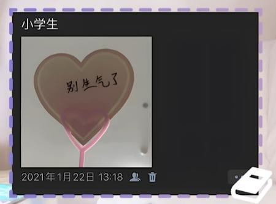
2021.1.18是迪士尼著名的那个那个 【诗情画奕】 20210118 错算时间迟赶赴，寒风苦等影孤独。一场误会小插曲，及时解决不多虑。_哔哩哔哩_bilibili
2021.1.22如图
2021.1.23周诗雨直播宣布要搬新房间啦！（当时还住331） 【诗情画奕】 20210123 新房间起新生活，做饭温馨期待多；萌妹长大原因有，双向确定最甜柔_哔哩哔哩_bilibili
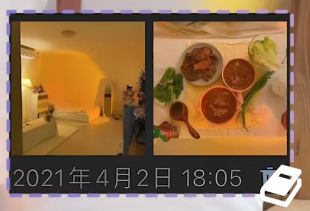
王奕具体哪一天入住339不太清楚，但是3.12之前就已经开始装修 【诗情画奕】20210312 339装修分工明确|夸夸小周的小王|错寄快递到小周学校_哔哩哔哩_bilibili
3.19周诗雨从学校返回中心，这一天是两人正式一同入住339！https://weibo.com/6158559618/4616537706862690
当天还发了绿洲合拍https://weibo.com/6158559618/4616257753582891
然后22号去厦门拍了水着，30号回上海（其中有著名女儿茶直播！）
然后就是4.2日这天难得的休息，一起收拾装扮了339，还做了大餐：https://weibo.com/6158559618/4621608394426555
4.4日发生了滑稽小事：https://weibo.com/6158559618/K9pq0hqqi
事件2：
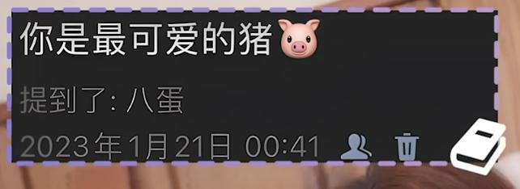
注意，是1.18才开始异地的！
这一天是刚好转钟到除夕的四十分钟后。
哎呀，到底是有多不得劲呀，隔了一个白天，晚上还要特地跑去直播飘屏呢~
除夕晚上8点多和十点多的直播： 【诗情画奕】20230121 双人直播cut 新年快乐_哔哩哔哩_bilibili
内容：王奕说某歌手的声音像zsy，王奕去周诗雨直播间飘屏：新年快乐、祝我家庭美满不、我有红包吗、我家里还有孩子
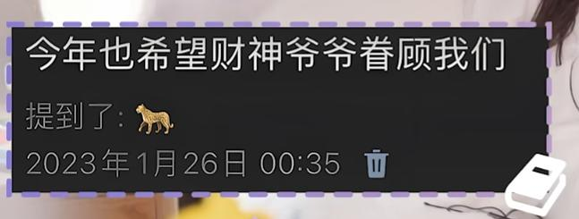
【诗情画奕】20230125-0126 一一电台cut_哔哩哔哩_bilibili
电台内容：周诗雨飘屏、选择你行不行、晚上见不着人，白天也见不着人
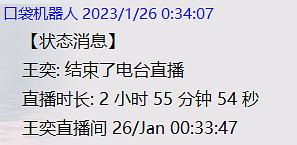
意思是，小王电台下播立刻发了这条朋友圈~注意！是立刻马上噢！！！
（所以王奕说那我肯定是不如……，是因为周诗雨回消息不及时吗~哈哈哈，这可太含蓄了呀！）
紧接着便是1.27，丢丢生日，两个人第一次连麦！
【诗情画奕】20230127-0128 小丢生日连麦cut 被你可爱到了|互相要对方撒娇|平时也没少视频聊天_哔哩哔哩_bilibili
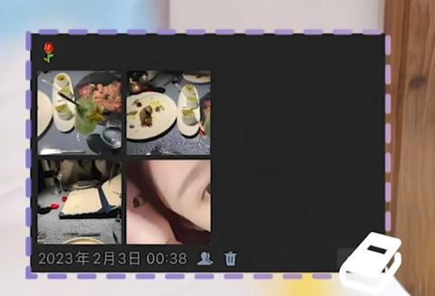
家人们，我还是觉得这天很离谱你们造吗！
自从春节放假1.18异地后，1.29日王奕单独返回了上海，1.30日王奕还留言了周诗雨抖音，https://weibo.com/6158559618/MqJpwdbHM
2.2日周诗雨早上返回上海
但是下午王奕剧场上班完还说了好几次一个人逛街呢！周诗雨还口袋上麦了呢！晚上咋就一起逛街烛光晚餐拍PV了啊！而且周诗雨晚上还去录音了啊！这天是猜来猜去猜了好多天才知道正确答案的呀！
然后2.3日周诗雨又回镇江了……真是神出鬼没的女人！
事件3：
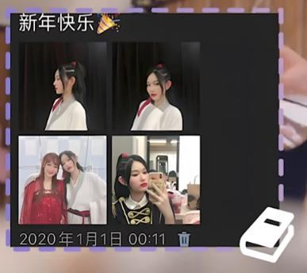
【诗情画奕】 20200101 傻傻的你，傻傻的我，傻傻地守得她和她的恒久。_哔哩哔哩_bilibili
内容：
王奕著名回旋镖发言：“周诗雨？我们只是同事！”←_←
周诗雨著名回旋镖发言：“王奕虚啊！她虚啊，她肾虚，她抱不动我！” “排练穿精神小伙紧身裤紧身衣，我对她一点感觉都没有。”“下次我要当男的，王奕你听见了吗？”←_←
事件4：
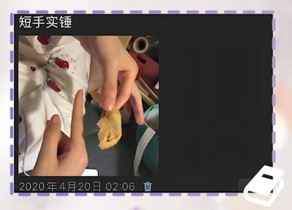
【诗情画奕】 20200419 在你面前不必在意形象，效果好坏一样都欢笑如常。_哔哩哔哩_bilibili
这天两人的口袋：
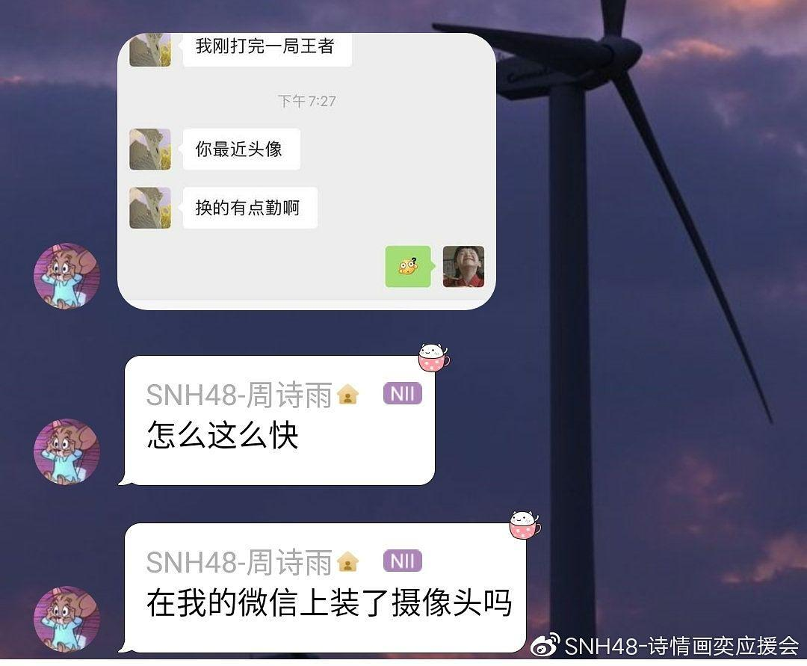
当天的电台，好像没什么参考性
【诗情画奕】20200426 相差两个鞋码的xql_哔哩哔哩_bilibili
【诗情画奕】以前不想用一个杯子 现在：用zsy的杯子接个水_哔哩哔哩_bilibili
事件5：
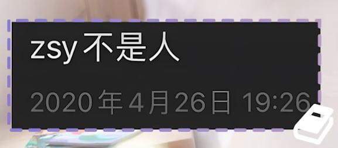
多么日常且温馨的一条朋友圈！
为什么呢？
因为2020年12月是伟大的一个月！因为这个月结束上学异地啦！！！感情急剧升温啊！
12.5日著名MC周诗雨上学也要记得想我 【诗情画奕】 20201205头号新闻 每天都能听见你，上学也要想念我。昭然若揭众所望，直抒胸臆私心藏。_哔哩哔哩_bilibili
12.6日著名咸蛋黄 【诗情画奕】 20201206 偷吃蛋黄惹欲哭，车票涨价主动补。为求斯人添一笑，费尽心思来满足。_哔哩哔哩_bilibili
12.9日口袋串门咯：https://weibo.com/6158559618/4580189814659520
12.14日 【诗情画奕】 20201212 1214 爱吃就点都买单，顾家公主巧打算；为拍美照多习练，怀中焐脚心中暖。_哔哩哔哩_bilibili
12.18口袋串门：https://weibo.com/6158559618/Jz1AOAaYa
12.19日：出街 https://weibo.com/5568536938/Ms2VC4XIR
12.22日： 【诗情画奕】 20201220 1222 误听“套话”作“烫坏”，人参有用就给买；一时批评嘴上挂，总有句句示关怀。_哔哩哔哩_bilibili
12.24日 【诗情画奕】 20201224 圣诞节纵是平平淡淡，平安夜共度平平安安_哔哩哔哩_bilibili
12.25圣诞名场面 【诗情画奕】 20201225 ：心上纯然小王翘首盼小周，心下了然众人对礼送对人。_哔哩哔哩_bilibili
多么日常且温馨的一个月！
事件6：
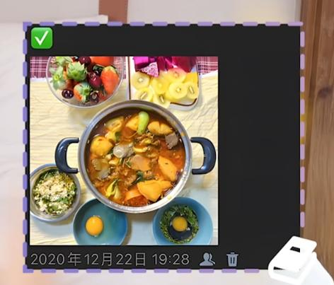
哎呀，又是一个春节异地啦！
2.1日是春节哦！周诗雨微博发了校园风合照，并且王奕留言了 https://weibo.com/6502570880/4732173271696016
然后2.6日这天！
留言抖音：https://weibo.com/6158559618/LegSKdOON
周诗雨直播王奕飘屏： 【诗情画奕】20220206 给你发消息|几天不见|你的样子我都知道|昨日让我夸你可爱 今日小气鬼_哔哩哔哩_bilibili
2.7日周诗雨发了一条微博，文案是：什么时候见面
事件7：
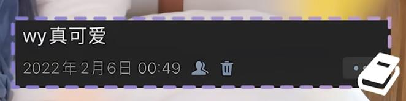
传说中的7.30周年纪念日
好！日记也证明了是周年纪念日！
2023年7月30日发的朋友圈。
图5应该是4.10日去拍的夏之回忆PV 【诗情画奕】20230422 最佳拍档第三季 第一轮 第十二场表演 《夏之回忆》舞台＆pv纯享_哔哩哔哩_bilibili
这一天，挑水人发了条微博，呆呆初亮相，并且评论自己：730是值得庆祝的一天